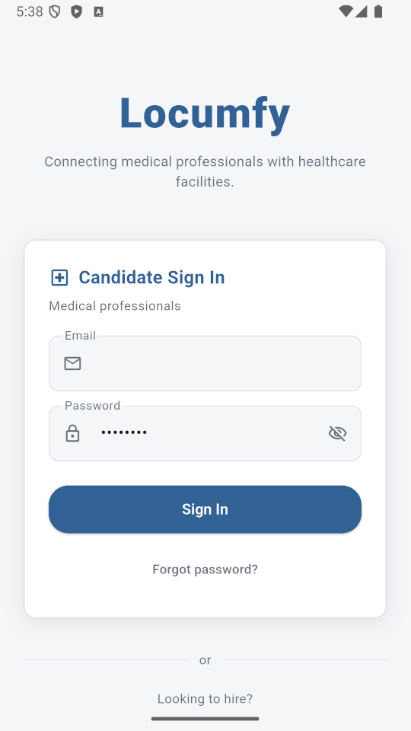
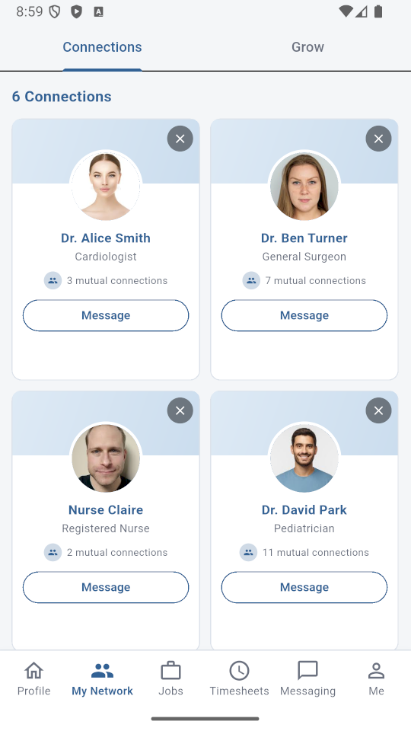
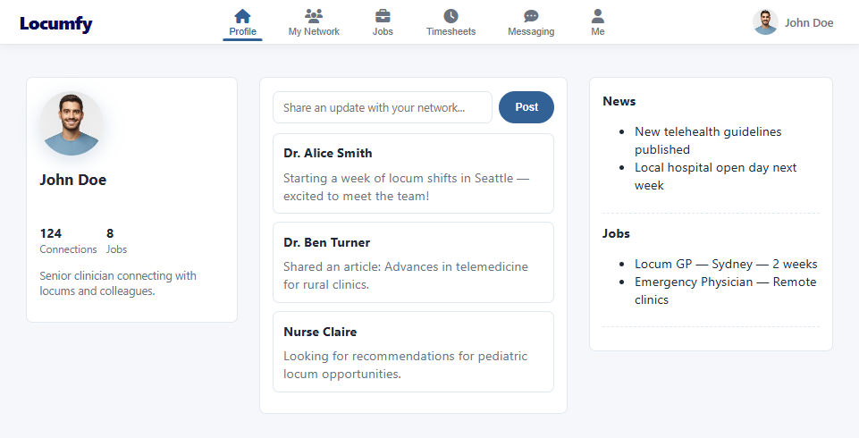
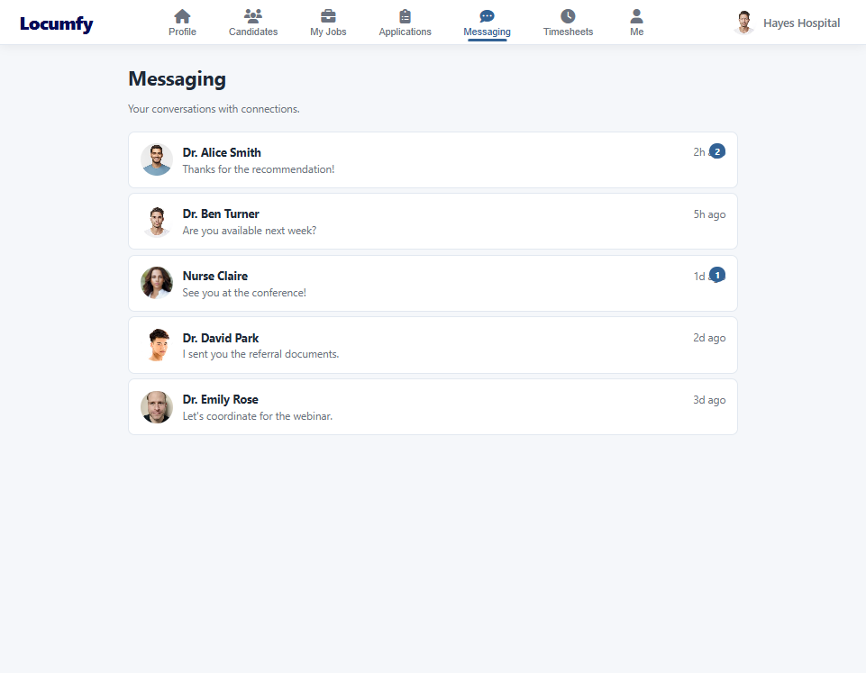

Mobile app
For medical professionals.
Profile, network, jobs, messaging and timesheets — the whole working life of a clinician on one device.






The mobile app professionals carry, the web experience that mirrors it, the portal facilities work in, and the dashboard operations runs on. Select any image to view it full size.
Profile, network, jobs, messaging and timesheets — the whole working life of a clinician on one device.


Professionals who prefer a full screen get every feature the app offers, built against the same interface.



Candidate discovery, job posting, the applicant pipeline, messaging and hour approval.




Growth, liquidity, engagement, supply and operational health, filterable by profession, state, title and period.